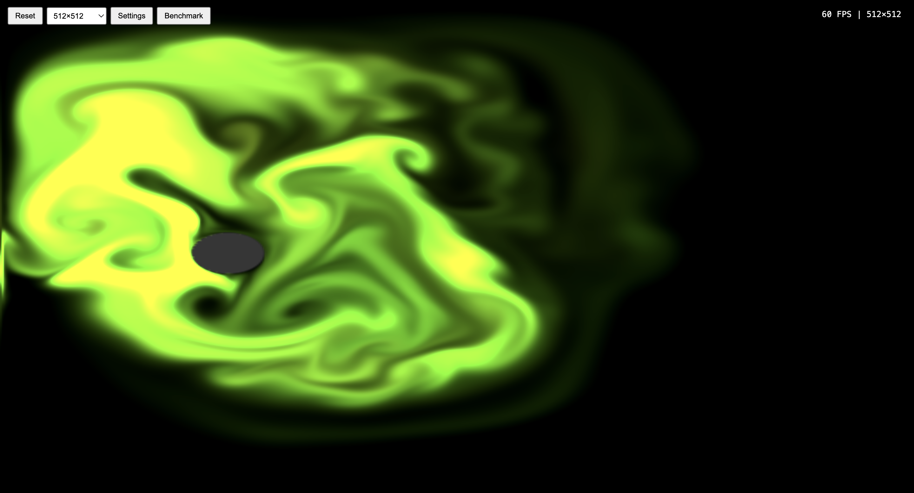
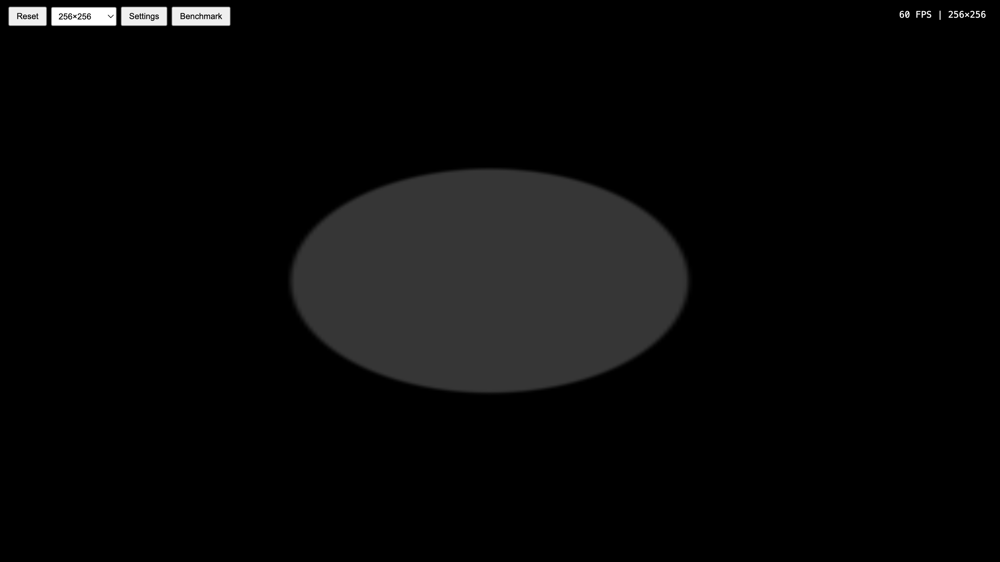
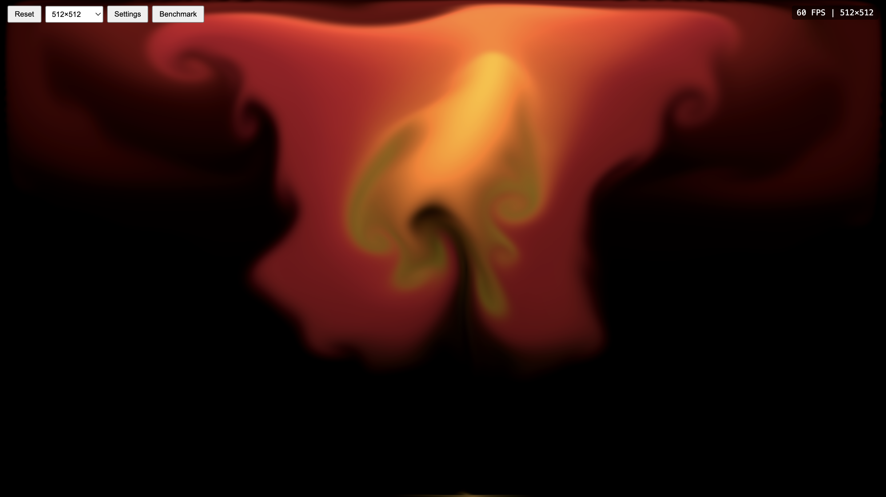
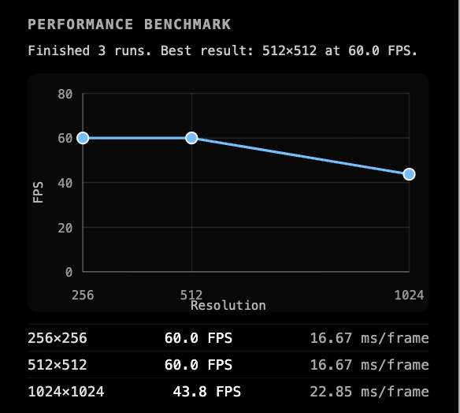

Abstract
Fluid simulation is one of the most visually striking and computationally demanding problems in computer graphics. Accurately modeling the movement of fluids requires solving the Navier-Stokes equations, a set of nonlinear PDEs that describe the motion of viscous fluid substances. These equations govern the behavior of fluid flow and have no known general closed-form solution.
FluidSim2D is an interactive, real-time 2D fluid simulator that runs entirely in a web browser. We solve the incompressible Navier–Stokes equations on a regular grid using operator splitting, with every step of the pipeline implemented as a fullscreen WebGL2 fragment shader. The core graphics work consists of semi-Lagrangian advection, an iterative Jacobi pressure projection that enforces incompressibility, viscosity diffusion, thermal buoyancy on an advected temperature field, no-slip walls, and analytically antialiased obstacle boundaries built from signed-distance functions. On top of the simulation we built lightweight tooling (an in-app benchmark, saved profiles, and visual presets) that mostly exists to help us tune and demo the simulator.
Technical Approach
Governing equations
We simulate an incompressible and homogeneous fluid by integrating the Navier–Stokes equations [1]:
where $\mathbf{u}$ is velocity, $p$ is pressure, $\nu$ is kinematic viscosity, and $\mathbf{f}$ collects external forces (mouse-driven impulses and thermal buoyancy). We use the standard operator-splitting approach and apply each term as a separate shader pass. We additionally advect a passive RGB dye field $d$ and a scalar temperature field $T$ through the same velocity field.
Pipeline
Every frame, the simulator runs the following ordered passes:
- Advect velocity, dye, and temperature using semi-Lagrangian backtracing.
- Diffuse velocity with $N$ Jacobi iterations to apply viscosity.
- Apply buoyancy: add an upward force proportional to temperature.
- Mouse splat: inject Gaussian impulses of velocity, dye, and heat at the cursor.
- Mask velocity inside obstacles (pre-projection).
- Compute divergence of the velocity field.
- Pressure solve: $N$ Jacobi iterations of the discrete Poisson equation.
- Subtract pressure gradient to project velocity onto a divergence-free field.
- Mask velocity inside obstacles (post-projection).
- Boundary conditions: no-slip walls and Neumann pressure at the domain edge.
- Composite dye with color grading and overlay the obstacle mask.
Semi-Lagrangian advection
For each output cell at position $\mathbf{x}$ we backtrace one timestep along the local velocity to find a "previous" position $\mathbf{x}-\Delta t\,\mathbf{u}(\mathbf{x})$, then bilinearly sample the source field there. This is unconditionally stable for any timestep and is implemented in a single fragment shader pass per advected field.
vec2 prev_uv = v_uv - u_dt * texture(u_velocity, v_uv).xy;
outColor = u_dissipation * texture(u_source, prev_uv);Pressure projection (Jacobi)
To enforce $\nabla\cdot\mathbf{u}=0$ we solve the Poisson equation $\nabla^{2}p = \nabla\cdot\mathbf{u}^{*}$ using Jacobi iteration. Each iteration is a single fragment shader pass that reads from the previous pressure texture and writes to the next via ping-pong render targets:
We then subtract $\nabla p$ from the intermediate velocity to recover an incompressible flow. Viscosity diffusion uses the same Jacobi structure with the modified weights from Harris [2].
Obstacles and antialiased boundaries
Obstacles are stored as analytic shapes (circles, rectangles, ellipses, diamonds) and rasterized into a single
grayscale mask texture. Originally we used hard step() tests, which produced visibly jagged edges and
grid-aligned flow artifacts at obstacle boundaries. We replaced the binary test with an analytic coverage estimate:
for each shape we evaluate a signed-distance function and apply smoothstep(-edge, edge, d), where
edge is one texel and the transition therefore spans roughly one texel on either side of the boundary.
// Ellipse SDF (gradient-norm approximation)
vec2 k = p / u_size;
float f = dot(k, k) - 1.0;
vec2 g = 2.0 * p / (u_size * u_size);
float d = f / max(length(g), 1e-6);
float edge = max(u_texel.x, u_texel.y);
float mask = 1.0 - smoothstep(-edge, edge, d);Because the resulting mask is now in $[0,1]$ near the boundary instead of $\{0,1\}$, the velocity-zeroing pass and the splat-clipping pass both respond proportionally to fractional coverage, giving the simulation a smoother response near walls without supersampling the entire grid.
Buoyancy and dye injection
A scalar temperature field $T$ is advected with the velocity and applies an upward body force $\mathbf{f}_{\text{buoy}} = (0,\, \kappa T)$ each frame. The mouse-driven splat injects three things at once: a velocity impulse proportional to mouse motion, a colored dye blob, and heat proportional to splat speed. The splat shader reads the obstacle mask and multiplies the Gaussian by $(1 - \text{mask})$, so dye and velocity cannot be drawn through obstacles.
Tooling
To support tuning and demoing the simulator we added a small set of supporting features: live sliders for solver
iterations, viscosity, dissipation, splat radius and force, and buoyancy strength; an in-app benchmark that
measures FPS and ms/frame across $256\times256$, $512\times512$, and $1024\times1024$ grids; a saved-profiles
system backed by localStorage; a small set of built-in visual presets; and a lightweight color
grading pass at composite time. These do not change the underlying simulation but were essential for iterating
quickly on parameters and for producing the showcase clip.
Problems Encountered
Dye and velocity bleeding through obstacles
Initially the splat shader added Gaussian impulses to dye and velocity at the cursor regardless of the obstacle mask. The post-projection velocity zeroing eventually erased the velocity inside obstacles, but dye still appeared visibly inside, which made it look like users were "drawing through" walls. We fixed this by sampling the obstacle mask in the splat shader itself and multiplying the injected color by $(1 - \text{mask})$.
Aliased obstacle edges
Using step() on shape inequalities produced hard, grid-aligned mask edges. This had two effects: it
looked visibly jagged, and it caused the simulation to "snap" velocity to or away from boundary cells in a way
that produced low-frequency artifacts. We replaced the boolean test with an analytic SDF + smoothstep
coverage estimate, giving sub-pixel edges and proportional velocity masking near boundaries.
Distinguishing real slowdowns from vsync rounding
Because the browser snaps to vsync, a small slowdown can present as a sudden jump from 60 FPS to 30 FPS,
which makes it hard to tell a real regression from background load. To get an unambiguous number, the
benchmark panel reports raw ms/frame directly alongside FPS, computed as the elapsed sample
window divided by the rendered frame count.
Texture format support
The simulator renders to RGBA16F textures, which requires the EXT_color_buffer_float
extension on WebGL2. We check for the extension at context creation and throw an explicit error if it is
missing, so the failure mode is a clear exception rather than silent all-black output.
Lessons Learned
- Boundary handling dominates visual quality. The single biggest jump in perceived realism came from antialiasing the obstacle mask and clipping splats with it. Solver tuning matters less than getting the walls right.
- Iteration tooling pays off. A simple in-app benchmark and saved configurations made parameter tuning much faster, even though they are not part of the simulation itself.
Results


smoothstep AA pass on obstacle edges.

References
- Navier–Stokes equations. Wikipedia. Article.
- Harris, M. Fast Fluid Dynamics Simulation on the GPU. GPU Gems, Chapter 38, 2004. Online.
- O'Brien, J. F. CS 184/284A: Computer Graphics and Imaging, UC Berkeley, Spring 2026. Course site.
Contributions
Athul Krishnan
navier stokes sim loop, viscosity/diffusion, boundary conditions, user inputs, initial UI, basic obstacles, FPS counter.
Ashton Lee
navier stokes simulation, user input integration, UI changes, webpage additions, slide deck development.
Gautam Rampur
benchmarking, obstacle placement, multi shape SDFs, antialiased boundaries, final webpage, and various UI additions.
Yamuna Rao
dev environment, WebGL2 rendering pipeline, simulation architecture, base UI, boundary conditions, user interaction, final presentation.